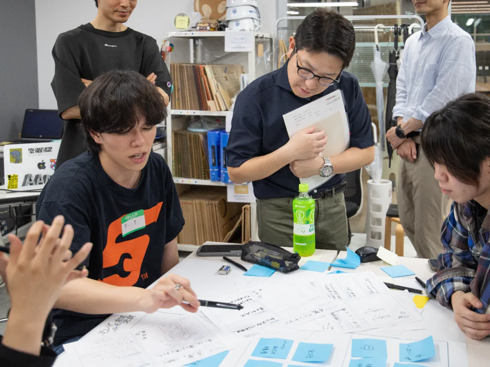

〜産学官連携による地域資源の循環と、文化をまとう暑熱対策の提案〜
2027年に横浜で開催される「GREEN×EXPO 2027（国際園芸博覧会）」に向けた、産学官連携の暑熱対策プロジェクト。
横浜市（ヨコハマ未来創造会議）、ユニフォームメーカーの株式会社DAIICHI、そして道用ゼミが協力し、
未利用資源をアップサイクルした新素材「紙糸（TSUMUGI）」を用いたプロダクト開発に挑戦しました。
- 間伐材の有効活用：森林の健全な成長のために伐採される「間伐材」。その多くは、搬出コストや形状の問題で山に放置されたままになっています。これらをチップ化し、原料として活用することで、山の保全と資源循環のサイクルを生み出しています。
- 紙パッケージのリサイクル：実は、家庭から出る紙製容器のリサイクル率はわずか約3％（※公式サイトより）。その多くが焼却処分されている現状に対し、回収した紙資源を「和紙」へと再生させ、素材として再利用しています。
素材への共感： 間伐材や紙包装紙を原料とした「紙糸」の持つ、断熱性・通気性・軽量性という機能的な価値と、資源循環というサステナブルな背景を理解することからスタート。
現場の課題： 夏のEXPO会場で活動するスタッフの過酷な暑熱環境を自分事として捉え、単なる「冷やす道具」ではなく、スタッフのモチベーションや「横浜らしさ」を表現できるものは何かを考えました。

- 問い：「最新の機能素材を、日本の文化と融合させることで、文化や素材にワクワクを持って着用できる暑熱対策ウェアは作れないか？」

- 「日本の夏」の象徴である「浴衣」をベースにするアイデアを採用。
- 「GREEN×EXPO」の世界観に合わせ、植物由来の染料を用いてグリーン基調の色彩を表現。素材の風合いを活かしながら、視覚的にも涼しさや自然を感じさせるデザインを追求しました。

- 制作プロセス： 紙糸の生地を使用し、実際に浴衣を1から製作。
- 直面した課題： 実際に着用して動いてみると、EXPOスタッフとしての「動きやすさ」や「着脱のしやすさ」において、丈の長い浴衣の形状では課題があることが判明。
さらに、本来の浴衣の素材より薄手であり、それ単体での浴衣作成には向いておらず、形状の変更を視野にいれた改善が必要でした。
- ブラッシュアップ： コンセプトである「日本文化」を継承しつつ、よりアクティブな現場に適した「半被（はっぴ）」スタイルへとデザインを転換させました。

- 完成したプロダクト（半被）は、EXPOスタッフへ瀬谷駅周辺から会場などでの活用を想定。
- 成果：伝統的な意匠と、紙糸の持つ「熱放・通気」という機能性が両立できることを実証。
- 学び：産学官という異なる立場の方々と連携する中で、デザインやアイデアの「理想」と、運用現場の「現実」をどう擦り合わせるかという、２つのバランス感覚を意識した学びを行うことができました。
平山 喜一 / Kiichi Hirayama